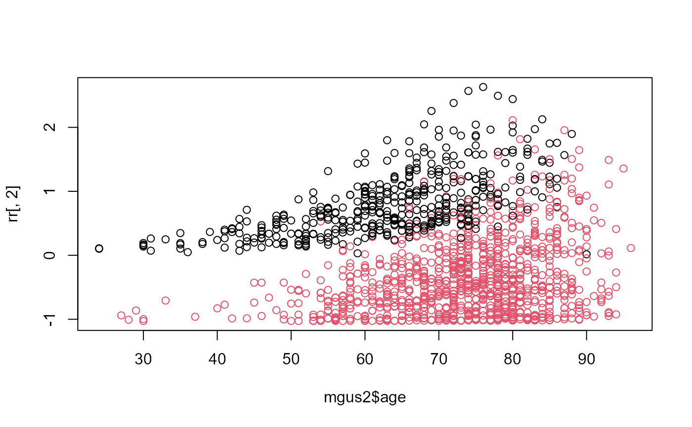

Compute Residuals for `survreg' Objects
residuals.survreg.RdThis is a method for the function residuals for objects
inheriting from class survreg.
Arguments
- object
an object inheriting from class
survreg.- type
type of residuals, with choices of
"response","deviance","dfbeta","dfbetas","working","ldcase","lsresp","ldshape", and"matrix".- rsigma
include the scale parameters in the variance matrix, when doing computations. (I can think of no good reason not to).
- collapse
optional vector of subject groups. If given, this must be of the same length as the residuals, and causes the result to be per group residuals.
- weighted
give weighted residuals? Normally residuals are unweighted.
- ...
other unused arguments
Value
A vector or matrix of residuals is returned. Response residuals are on the scale of the original data, working residuals are on the scale of the linear predictor, and deviance residuals are on log-likelihood scale. The dfbeta residuals are a matrix, where the ith row gives the approximate change in the coefficients due to the addition of subject i. The dfbetas matrix contains the dfbeta residuals, with each column scaled by the standard deviation of that coefficient.
The matrix type produces a matrix based on derivatives of the log-likelihood
function. Let \(L\) be the log-likelihood, \(p\) be the linear predictor \(X\beta\),
and \(s\) be \(\log(\sigma)\). Then the 6 columns of the matrix are
\(L\), \(dL/dp\),\(\partial^2L/\partial p^2\),
\(dL/ds\), \(\partial^2L/\partial s^2\) and
\(\partial^2L/\partial p\partial s\).
Diagnostics based on these quantities
are discussed in the book and article by Escobar and Meeker.
The main ones are the likelihood displacement residuals for perturbation
of a case weight (ldcase), the response value (ldresp),
and the shape.
For a transformed distribution such as the log-normal or Weibull,
matrix residuals are based on the log-likelihood of the transformed data
log(y).
For a monotone function f the density of f(X) is the density of X
divided by the derivative of f (the Jacobian), so subtract log(derivative) from
each uncensored observation's loglik value in order to match the
loglik component of the result. The other colums of the matrix
residual are unchanged by the transformation.
References
Escobar, L. A. and Meeker, W. Q. (1992). Assessing influence in regression analysis with censored data. Biometrics 48, 507-528.
Escobar, L. A. and Meeker, W. Q. (1998). Statistical Methods for Reliablilty Data. Wiley.
Examples
fit <- survreg(Surv(futime, death) ~ age + sex, mgus2)
summary(fit) # age and sex are both important
#>
#> Call:
#> survreg(formula = Surv(futime, death) ~ age + sex, data = mgus2)
#> Value Std. Error z p
#> (Intercept) 8.85979 0.23842 37.16 < 2e-16
#> age -0.05360 0.00312 -17.19 < 2e-16
#> sexM -0.31874 0.06357 -5.01 5.3e-07
#> Log(scale) -0.02840 0.02787 -1.02 0.31
#>
#> Scale= 0.972
#>
#> Weibull distribution
#> Loglik(model)= -5528.3 Loglik(intercept only)= -5699
#> Chisq= 341.42 on 2 degrees of freedom, p= 7.3e-75
#> Number of Newton-Raphson Iterations: 5
#> n= 1384
#>
rr <- residuals(fit, type='matrix')
sum(rr[,1]) - with(mgus2, sum(log(futime[death==1]))) # loglik
#> [1] -5528.267
plot(mgus2$age, rr[,2], col= (1+mgus2$death)) # ldresp
